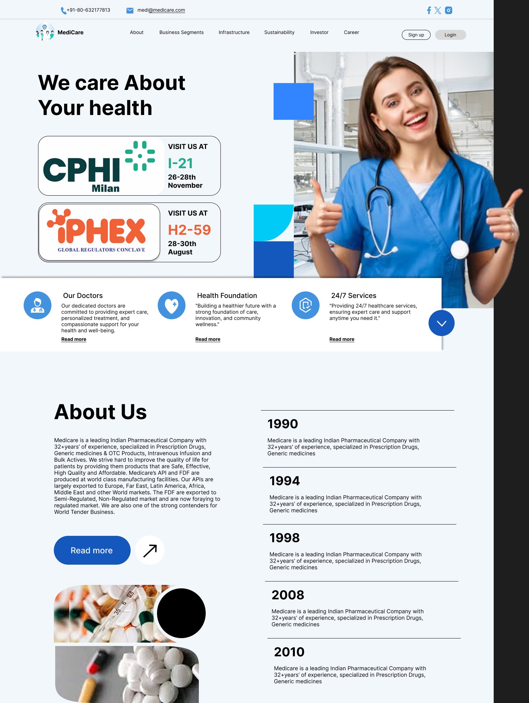
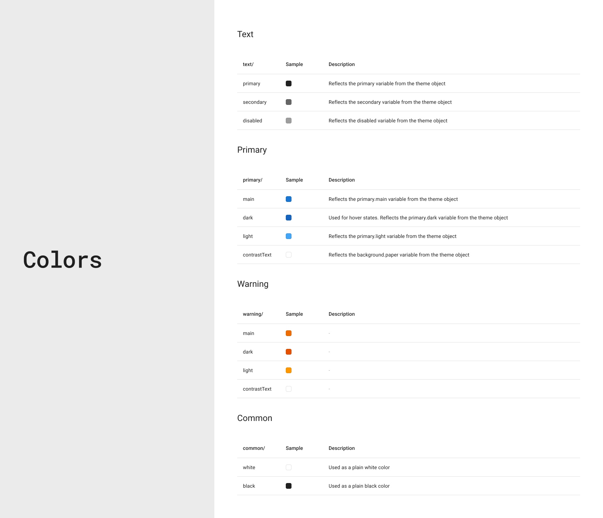

Project: MediCare – Making Healthcare Access Simple & Human
A UI/UX Design Case Study
Introduction
In the digital healthcare space, users often find themselves lost in poorly structured interfaces,
unclear service flows, or disconnected tools. This project involved the redesign of an existing
healthcare website that offered essential services like ambulance booking, health checkups, and
online consultations — but lacked clarity, accessibility, and user trust.
As the lead UX/UI designer, I took on the challenge of rethinking the entire platform with a goal to
streamline the user experience, create visual harmony, and most importantly — ensure users could
access life-critical services with confidence and ease. The redesign aimed to improve usability,
responsiveness, and user trust, particularly during moments of stress or urgency.
Note: Due to confidentiality agreements, the original platform name and designs cannot be
disclosed publicly.
Problem Statement
The existing platform had multiple usability and accessibility challenges:
Overwhelming navigation: Services were not clearly grouped, leading to user confusion and
drop-offs.
Lack of urgency flow: Emergency services like ambulance booking lacked priority visibility or
intuitive access.
Generic interface: The old design lacked warmth, clarity, and trust-building elements for a
healthcare audience.
Non-responsive layout: The website did not adapt well across devices, limiting accessibility for
mobile users.
Low visual hierarchy: Important CTAs and content areas were not distinguishable, delaying
decision-making.
These factors negatively impacted user retention, satisfaction, and task completion rates.
Project Overview
This redesign project focused on transforming the platform into a more user-centric, visually clean,
and purpose-driven interface, enabling users to:
Book ambulances quickly based on live location
Schedule health checkups with local verified providers
Consult doctors online with easy appointment setup
Access health reports and view service history
Receive alerts and reminders for booked services or prescriptions
The scope included a complete website redesign, with mobile responsiveness and visual accessibility
as top priorities.
Design Approach
Bring clarity and trust to the user experience
Create clear service segmentation with minimal cognitive load
Redesign the IA (Information Architecture) for easier discovery
Ensure mobile responsiveness and accessibility compliance (WCAG)
Add empathy to the interface — soft, clean, and comforting visual design
Design Process
1. UX Audit & User Interviews
Conducted a full audit of the existing platform (heuristics, flow gaps, loading issues).
Interviewed 15 users who had previously used the website for urgent or regular bookings.
Key Insights:
70% struggled to find ambulance or emergency options quickly.
60% said the visuals and layout didn’t make them feel secure or cared for.
50% were unaware of features available due to poor navigation or grouping.
2. Revised User Flow & IA
Restructured the core flow to ensure faster access and reduced clicks:
Home → Choose Service → Fill Minimal Info → Confirm → Follow-up Page.
Grouped services under Emergency, Consultation, and Routine Care for mental clarity.
3. Wireframing & Prototyping
Created multiple iterations of mid- and high-fidelity wireframes for:
Homepage with quick access tiles
Ambulance Booking Page with live location & ETA
Doctor Consultation Module with time slots and filters
Health Record Dashboard with upload & download options
4. UI Design & Visual Language
Typography: Clean sans-serif for high readability
Colors: Light backgrounds with calming blues and greens; red used only for emergency CTA
Components: Rounded corners, card layouts, and accessible contrast for all elements
Icons: Simple, universally recognizable healthcare symbols
5. Responsive & Accessible Design
Used mobile-first principles and ensured fluid layouts. Added alt-text and keyboard navigability for
assistive tech users.
Solution Highlights
Quick-Tile Homepage: Users can immediately select a service (Ambulance, Consultation, Checkup).
Emergency-first Interface: Emergency button with location detect is persistent on all screens.
Streamlined Booking Forms: Smart forms with autofill and location detection.
Consultation Flow: Doctors displayed with time slots, ratings, and specialties for better
decision-making.
Health History Dashboard: A clean, accessible space to view and manage medical records.
Impact & Reflections
Post-redesign evaluation (internal and limited user testing) showed:
Time to task completion (ambulance booking) reduced by 52%.
User trust levels increased by 48%, based on satisfaction surveys.
Bounce rate on homepage reduced by 35%.
Mobile usage increased by 60%, attributed to responsive layouts.
Reflections & Learnings
This redesign project deepened my understanding of designing under pressure and for empathy.
Healthcare UX isn’t just about flow — it’s about trust, timing, and clarity. I focused on building
an interface that felt calm, easy, and reliable — especially for users who might be experiencing
high stress.
Even though the project remains confidential and designs cannot be publicly shared, the work taught
me to prioritize both emotional and functional design in sensitive domains like healthcare. The next
phase includes integrating more accessibility tools and building a minimal mobile app for instant
emergency access.
UI Design
